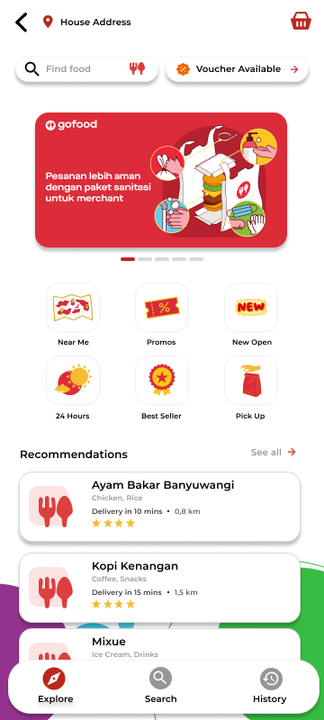
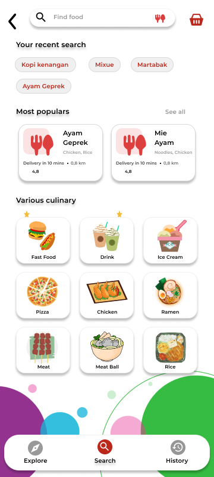
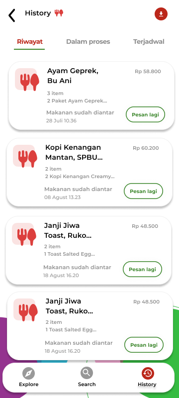
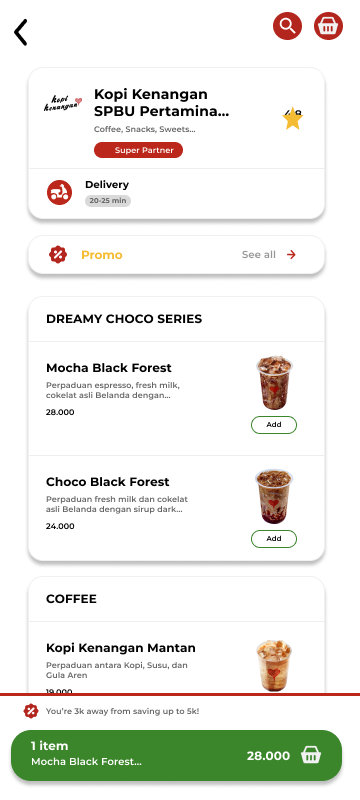
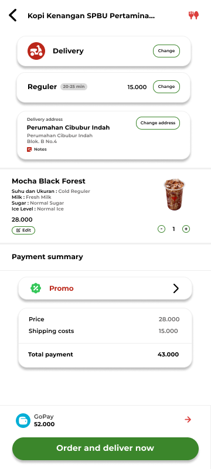
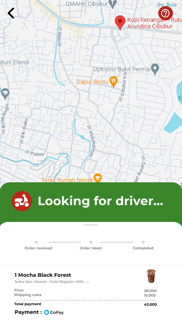
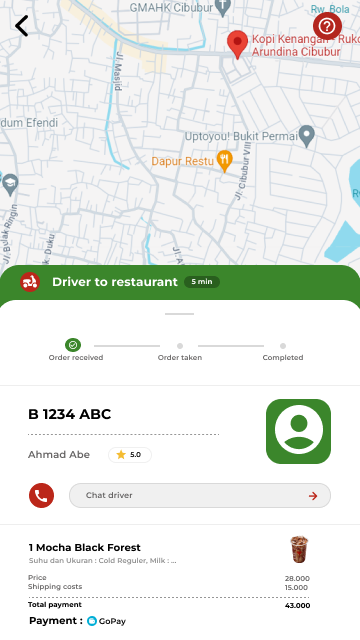
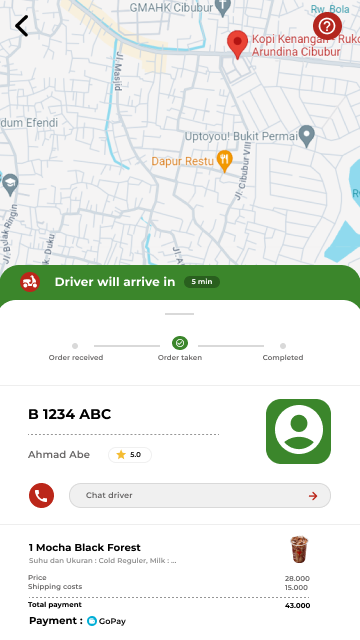
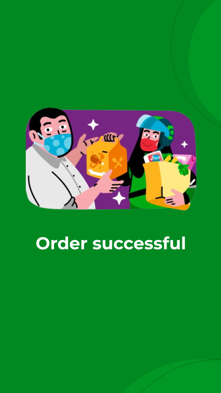

Redesign UI/UX GoFood merupakan proyek yang berfokus pada peningkatan pengalaman pengguna dalam aplikasi pemesanan makanan. Redesain ini dilakukan dengan pendekatan user-centered design untuk menciptakan tampilan yang lebih modern, navigasi yang lebih intuitif, serta alur pemesanan yang lebih efisien dan mudah dipahami oleh pengguna.








